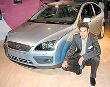
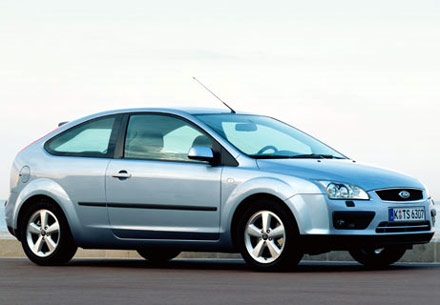
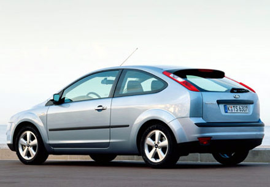

|
Bünyesinde
5 marka bulunan Volkswagen'in tasarým grubu baþkanlýðýna Murat
Günak getirildi. Mazda 3 serisini Hasip Girgin tasarladý.
Þimdi de bir baþka Türk Murat Güler, yeni Ford Focus'un tasarýmýna
imza attý. Üç ismin bir diðer ortak yönü de Almanya'da yaþamalarý.
Güler, Almanya doðumlu ikinci kuþak Türklerden. Ýlkokuldan
itibaren eðitimini Almanya'da alan Güler, tasarýmla ilgili
olarak Ýsviçre'nin Montrö kentindeki Art Center College of
Design'ý bitirmiþ.
1971
yýlýnda Almanya'da dünyaya gelen Murat Güler, ailesinin daha
önceki yýllarda Almanya'ya iþ için geldiðini ve babasýnýn
da Ford'da marangoz olarak çalýþtýðýný söylüyor. Güler, küçük
yaþlardan itibaren otomobile merak duymuþ. "Öðrenciyken böyle
bir meslekten habersizdim; ama sürekli araba dergileri okuyordum."
diyen Güler, 1996 yýlýnda okulu bitirdikten sonra Volkswagen'de
çalýþmaya baþlamýþ. Üç yýl boyunca daha çok þov otomobillerinin
tasarýmýnda yer almýþ. 1999'da ise babasýnýn marangoz olarak
çalýþtýðý Ford'a geçmiþ. Kýsa süredeki baþarýlarý nedeniyle
Focus'un tasarýmý için belirlenen ekibin içinde yer almýþ.
Yeni
modelini Güler'in tasarladýðý Focus, Ford'un çok önem verdiði
otomobiller arasýnda. Bu nedenle yeni modelin tasarýmýna da
büyük önem verilmiþ. 1999 yýlýnda yeni Focus'un tasarýmýna
baþlandýðýný hatýrlatan Güler, tasarým sürecini þöyle anlattý:
"Birçok arkadaþýmla birlikte ben de Focus'un tasarýmý için
çizmeye baþladým. Bir süre sonra 8 tasarým ön plana çýktý.
Bunlar üzerinde de geliþtirmeler devam etti ve üç tasarým
finale kaldý. Diðer iki tasarýmdan biri çok radikal çizgilere
sahip olduðu için Ford o riski almak istemedi. Diðeri ise
mevcut modele çok yakýndý. Focus'un hem ilk çýktýðýndaki sýradýþý
çizgisini koruyan hem de kaliteli bir otomobil imajýný güçlendiren
çizgileri nedeniyle benim tasarýmým tercih edildi."

Murat
Güler'in tasarýmlarýna iyi aile hayatý ilham veriyor. Almanca
ve Ýngilizcenin yanýnda düzgün ve akýcý Türkçe konuþabilmesini
Türkiye ile irtibatýný iyi korumasýna ve eþinin de Türk olmasýna
baðlayan Güler, iyi bir aile hayatý yaþamaya da önem verdiðini
dile getiriyor. Tasarýmcýlarýn bazen çok baþarýlý, bazen çok
baþarýsýz günler geçirdiðini belirten Güler, "Eþim bu dönemlerde
bu dalgalanmalarý düzenleyen kiþi oluyor. Moral desteði saðlýyor.
Bunun dýþýnda spora önem veriyorum. Yazlarý Türkiye'ye gelip
sörf yapýyorum. Tabii bir de sürekli boks yapýyorum, bunlar
beni rahatlatýp geniþ düþünmemi saðlýyor. Yoksa illa ki cennet
gibi bir yerde oturmakla iyi tasarým yapýlmaz. Köln'de de
olsam, Batman'a da gitsem iyi bir þey yapabilecek moraldeysem
yine tasarlarým." diye konuþtu. Herkesin Porsche, Ferrari
gibi lüks pahalý bir otomobili tasarlayabileceðini belirten
Güler, Focus gibi bir otomobili tasarlamanýn daha zor olduðunu
belirterek þunlarý söyledi: "Lüks otomobilde bütçe büyüktür
ve tasarladýðýnýz otomobil için sýnýrlar yoktur. Bu yüzden
boþ kaleye gol atmak gibidir. Oysa Focus gibi bir otomobili
tasarlarken dýþ ölçülere, iç ölçülere uymak zorundasýnýz.
Yani milyonlarca insanýn hem gözüne hem kesesine hem de rahatýna
göre bir þey çizmek kolay deðil. Benim bir hayalim var; Türkiye'ye
gelip bir otomobil tasarlamak istiyorum. Lotus Elise gibi
gösteriþli; ama pahalýya mal olmayacak, Türk halkýnýn alým
gücüne uygun bir otomobil tasarlamayý isterim."

Yeni
Ford Focus'un Ýtalya'nýn Toskana bölgesinde yapýlan uluslararasý
test sürüþ programýnda dünya basýnýna sunum yapan Güler, Yunanistan'dan
gelen ekibe tanýtým yaparken biraz tedirgin olduðunu; ancak
biraz kaynaþtýktan sonra onlarýn da kendisinin Türk olmasýndan
dolayý takýntý yapmadýðýný dile getirdi. Focus tasarýmýna
imza atan Güler'in Ford'un yeni bir modelinin daha tasarýmýný
üstlendiði ve onaylanan bu projenin de þu sýralar tamamlanmak
üzere olduðu belirtiliyor.
Otosan,
fabrikaya davet etti
19
Kasým'da Auto Show'a katýlmak için Türkiye'ye geleceðini söyleyen
Güler, Ford Otosan Genel Müdürü Turgay Durak'ýn kendisini
Gölcük'teki fabrikaya davet ettiðini, orada da bir görüþme
yapacaklarýný belirtti. Bu görüþme talebinin Ford Otosan'ýn
Türkiye'de ürettiði modellerden birinin tasarýmýyla ilgili
olup olmayacaðý yönündeki sorumuza Güler, "Bilmiyorum. Sonuçta
ben Ford Avrupa'da çalýþýyorum. Ama Ford Otosan için baþka
bir proje gündeme gelirse seve seve yaparým." dedi.
Tasarýmýný
Murat Güler'in yaptýðý yeni Ford Focus'un iç mekan tasarýmýnda
da bir Türk kadýnýnýn imzasý var. Focus'un iç mekanýnýn koltuk,
renk, desen gibi öðelerinin seçiminden sorumlu olan Þerife
Ünal, bir bakýma Focus'un içindeki estetiðin mimarlarýndan
biri.
Yeni Focus Mart 2005'de Türkiye'ye gelecek
Ford'un
6 yýlda 4 milyondan fazla müþteriye ulaþan Focus modeli, ikinci
nesil olarak Avrupa'da pazara çýktý. Türkiye'de mart ayýndan
itibaren 3,5 kapý, sedan ve SW modelleri satýþa sunulacak
olan Focus, kalite ve yeni teknolojiler konusunda ön plana
çýkmaya hazýrlanýyor. Yola uyumlu farlar, yüksekliði ayarlanabilir
pedallar, sesle kontrol edilen müzik ve telefon sistemi, blue
tooth teknolojisi, sürekli deðiþken otomatik þanzýman gibi
yeniliklere sahip Focus'ta daha önce C-Max'te uygulanan 1,6
litrelik dizel motor da ilk kez kullanýlmaya baþlanacak.
Kaynak:
ZAMAN,
11.10.2004, Memduh Taþlýcalý, Siena
Daha
Fazla bilgi için:
- Ford
Focus 2005
- Murat
Güler
- Murat
Günak
- Hasip
Girgin
|